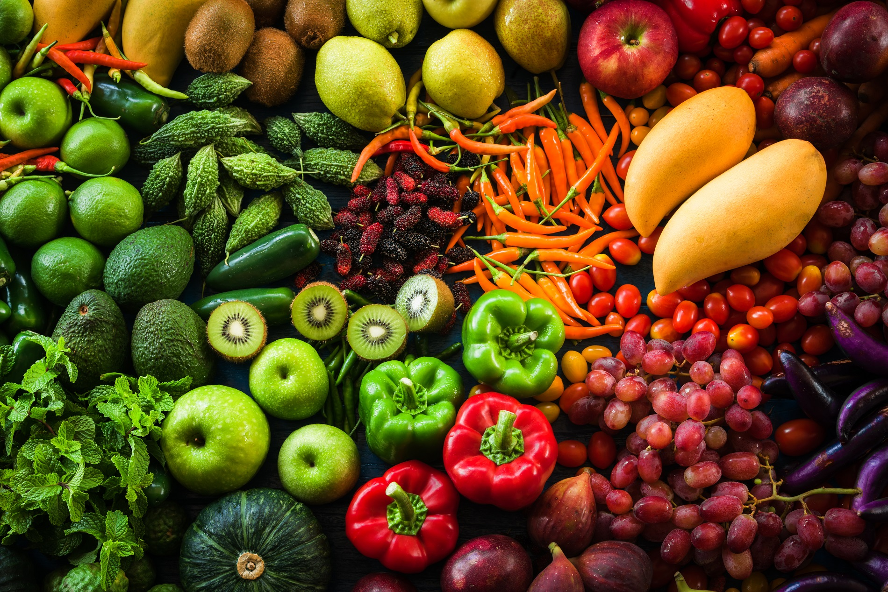

Explore food examples
Food Guide
Explore examples of foods at different processing levels and learn how ingredients, preparation, and processing can affect the final product.

Compare foods and learn what makes them different.
Search and explore
Food examples
Search by food name or ingredient, filter by category, or display only your favorite foods.